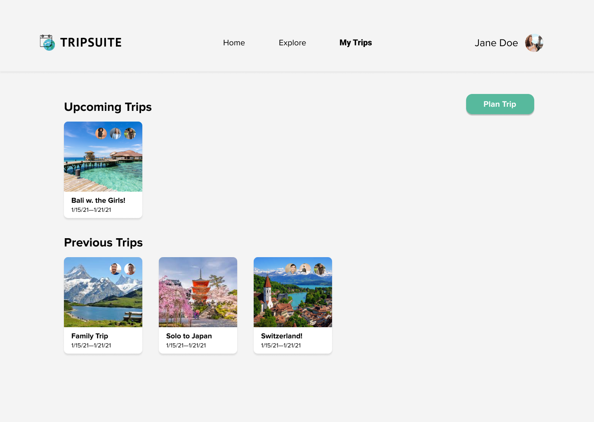
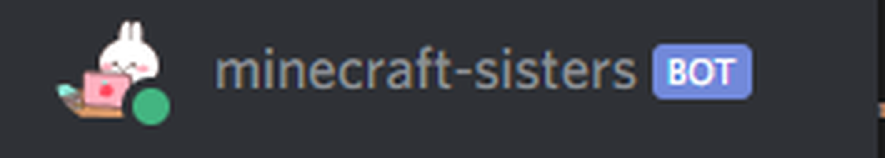
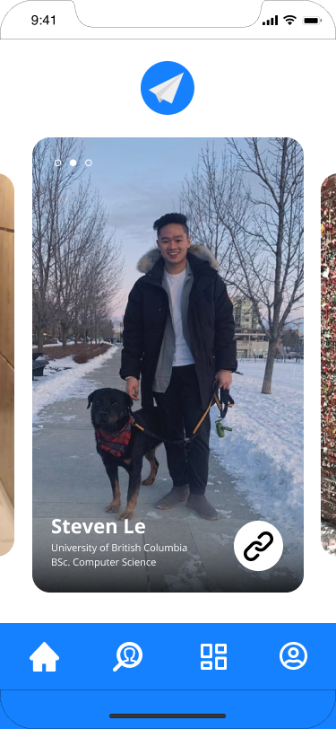
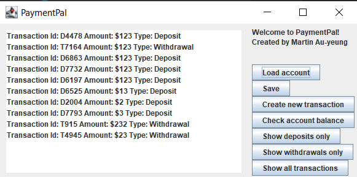
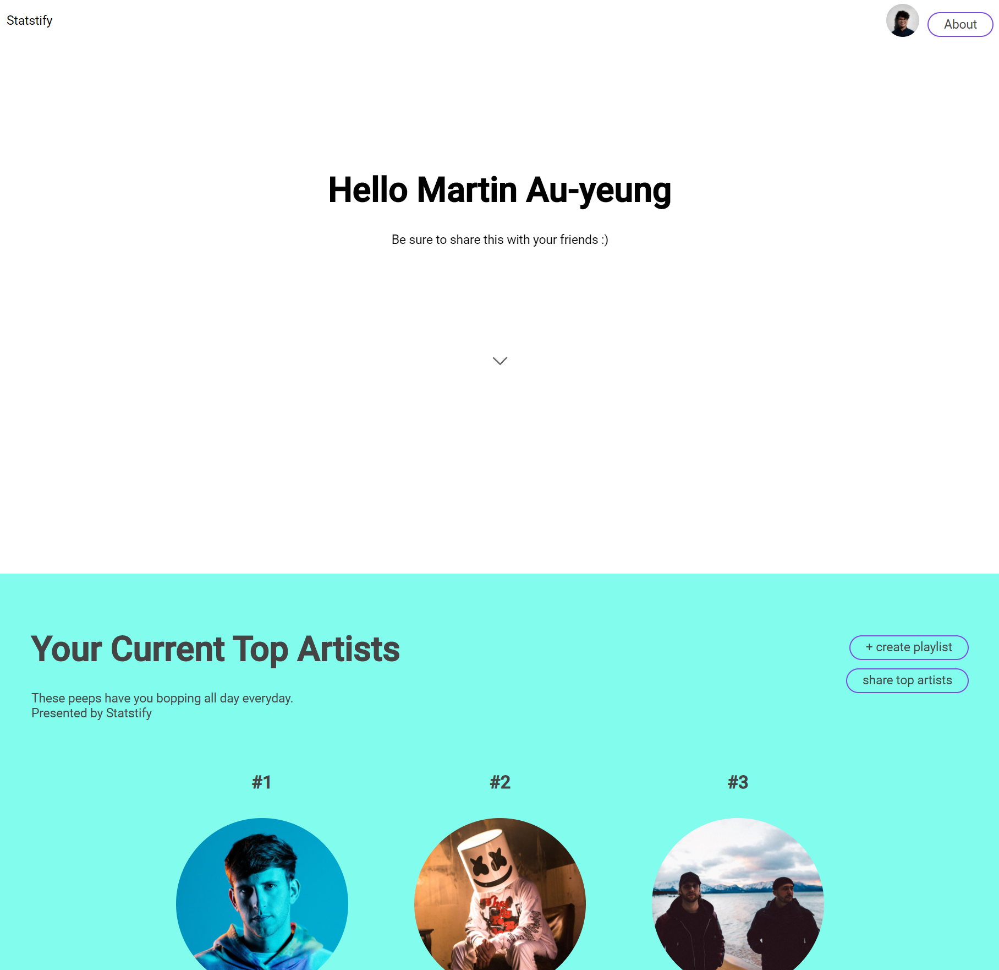

About Me
I am a Combined Major in Science student at the University of British Columbia, specializing in Computer Science, Biological Sciences & Earth, and Ocean Sciences.
I recently switched into this program from Biology in January 2020. Having done Computer Science since Highschool, I never considered it to be something I would pursue full-time, but instead something on the side for fun. However, over time, I realized Biology wasn't truly what I wanted to do as a full-time career, and the aspects of being a developer became more intriguing, most notably being able to create a product I or someone could use, and as well allow me to apply my entrepreneurship skills led me to make the switch over to pursue a Computer Science degree full-time.
Passionate about learning more about development outside of class to accelerate my learning and catch up on what I've "missed", this website is used for me to learn more about front-end web development; and as well showcase the projects that I complete.
Some things I'm proud of in my journey in switching so far:
Technical Skills
- JavaScript
- Python
- Java
- C++
- C
- Assembly
- TypeScript
- HTML
- CSS
- Flutter
- React
- Bootstrap 4
- Node.js
- jQuery Ajax
- Express.js
- Axios.js
- Data Structures & Algorithms (In Progress)
- Introduction to Computer Systems (In Progress)
- Software Construction (Fall 2020)
- Systematic Program Design (Spring 2020)
- Models of Compuation (Spring 2020)
- Introduction to Systematic Program Design (Fall 2019)
- AP Computer Science (Highschool 2017)
- MongoDB
- Git
- Heroku
- Bash
- REST API
- JSON
- Google Firebase
- Google Firestore
- Google mySQL
- Google Cloud Functions
- Google Natural Language Proccesing
- Visual Studio Code
- IntelliJ
- Atom
For more information, see Attached Resume
Projects

TripSuite (January 2021)
MERN stack travel planning web app that allows you to calculate and create a plan for your next trip, built for NWHacks 2021.
I personally worked on login authentication system that allows for data to be saved per user. I assisted in the creation of an Express server that handles axios calls to save input data to MongoDB database. Additionally helped with React front-end mentorship.
Frameworks & Libraries: React, Node.js, Express, MongoDB, Grommet V2


hubble (October 2020)
DubHacks 2020 Winner of the Google Cloud COVID-19 Hackathon Fund.
An mobile application that aims to connect students together during the online COVID-19 pandemic.
I served as the back-end developer and team lead. I created a custom matching algorithm in 24 hours to connect students with similar interests and courses using Google Cloud’s Natural Language Processing API (NLP)
The back-end uses Google Firebase, with Firestore acting as the database and Cloud functions hosting the matching algorithm. The front-end was built with Swift UI for the hackathon.
Currently, the project has recieved $5000 and one on one developer mentorship support from Google to assist in the production of our app. As such, many elements on the Devpost, such as the UI, are currently outdated.
Our current app uses Flutter as it's front-end UI, our back-end remains mostly unchanged other than some small refactoring changes! I currently am working on the UI right now. Feel free to contact me for more about what we are currently working on.
Frameworks & Libraries: Flutter, Google Firebase/Firestore/Cloud Functions, Google Cloud Natural Processing Language, Node.js, Swift UI,

PaymentPal (September 2020)
Java banking simulator built for CPSC 210 (Software Construction)
Phase 1 User Stories: Depositing Credits, withdrawing Credits, and seeing transaction history.
Phase 2 User Stories: Saving account balance and transaction history. Loading prior account balance and transaction history
Phase 3: GUI with filter options
Frameworks & Libraries: JUnit Testing, Swing UI

Statstify (August 2020)
A 3rd party Spotify Web app that displays current top 3 most listened to artists, current top 15 songs, audio features of the songs you listen/listened to (current vs all time), throwback suggestions based on what you listened to in the past, share top songs/top artists/throwbacks and generate playlists function
I've always been an avid user of Spotify, and I wished there was a way to view my own personal statistics, create playlists off of them and have throwback songs suggested to me. So, I decided to make my own web app that does it for me.
I was able to get a strong understanding of React, as well as JavaScript. This project was meant to show what I learned over the summer as well as applying previous knowledge from past projects.
Learned how to use jQuery Ajax to make API calls. As well used async and await features. Written in JavaScript with React framework
Frameworks & Libraries: React.js, Node.js, jQuery Ajax, Grommet V2, Spotify Web API.

WeatherWear (Feb 2020)
A simple JavScript web application that takes in weather data from OpenWeather and tells user if he/she should wear a jacket based on the weather conditions
Learned how to use Node.js frameworks (Express.js and Axios.js) to call API from OpenWeather and Google Places. Further developed skills with JavaScript, HTML and CSS. Looking to further develop application to consider more clothing options, and allow a user to put preferences on what they normally wear
Language: JavaScript, HTML and CSS
Frameworks & Modules: Node.js, Express.js, Axios.js

UPass Auto Renew (Feb 2020)
A Chrome extension built on JavaScript for LifeHacks 2020. Proof of Concept was built with additional HTML pages to test the extensions functions, as we were unable to access a state where we could request the UPass on the official website to test the program.
Although we did not have a working product by the end of the Hackathon, my first experience with a hackathon allowed me to learn how to develop an application from scratch in a team, and as well continue to develop my skills with JavaScript, HTML, CSS and Git. I personally worked on the JavaScript, HTML and CSS of our test website to allow the chrome extension to test the real world case if the UPass was avaliable to request.
Chrome Extension using JavaScript, HTML and CSS, more details avaliable in the Git Repo

MFTM (Nov 2019)
A program that takes in spreadsheet data from ICBC that details yearly invovled fatality group and produces a pie chart to calculate the highest average percentage of Motor Vehicle fatality type per year across 7 year time period to determine which method of transporation is the most dangerous. (Most Fatal Transportation Mode)
This project allowed me to develop skills using Python to analyze data sets, built for Introduction to Systematic Program Design Course (CPSC 103) at UBC